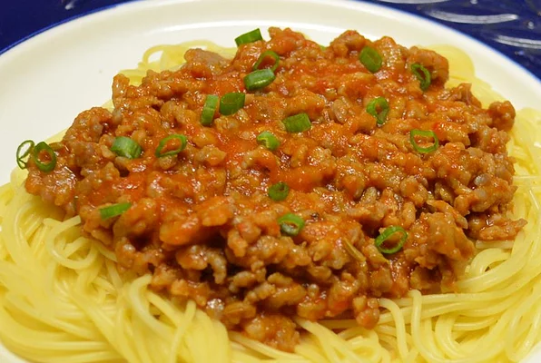

Dad's Spaghetti

INGREDIENTS
- 1 pound of spaghetti
- 2 pounds of lean ground beef
- 1 jar of spaghetti sauce
optional
DIRECTIONS
- Bring a large pot of lightly salted water to a boil. Add pasta and cook for 8-10 minutes or until al dente; drain.
- In a large skillet over medium heat, cook ground beef (with onion and peppers optional) until meat is brown. Drain. Return meat mixture to pan. Add jar of spaghetti sauce.Serve over cooked pasta.